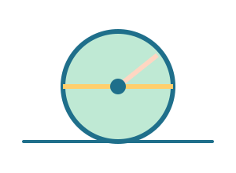

מה לומדים?
- רדיוס הוא המרחק מהמרכז לשפה.
- קוטר הוא שני רדיוסים ברצף.
- היקף עיגול בקירוב: קוטר כפול 3.
דוגמאות קצרות
מדדו את הקוטר של צלחת וחישבו היקף בקירוב.
משימה ידנית
ציירו שלושה עיגולים עם רדיוסים שונים וסמנו את הקוטר.
מכירים רדיוס, קוטר והיקף בעזרת מחוגה.

מדדו את הקוטר של צלחת וחישבו היקף בקירוב.
ציירו שלושה עיגולים עם רדיוסים שונים וסמנו את הקוטר.